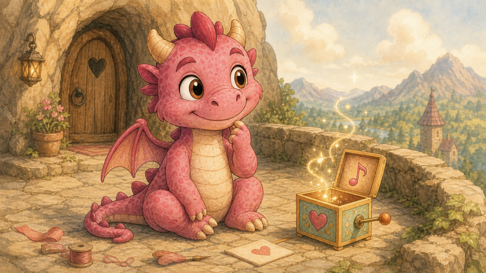

Rozprávka 6
Spievankina čarovná bednička

Spievanka mala veľký plán.
Nie obyčajný veľký plán, ako keď si niekto povie, že dnes uprace všetky hračky, a potom uprace tri, lebo štvrtá vyzerá zaujímavo. Spievankin plán bol ozajstný, veľký, ružový, lesklý a podľa jej vlastného názoru taký dôležitý, že by o ňom raz mohli písať v kronike.
Chcela si vyrobiť čarovnú bedničku na hračky.
Nie takú, do ktorej sa hračky iba odkladajú. To by bolo príliš dospelé. Dospelí majú radi veci, do ktorých sa niečo odkladá, zatvára, triedi a potom sa na to zabudne.
Spievanka chcela bedničku, ktorá bude hračky vyrábať.
Čarovné hračky.
Také, ktoré keď ležia na stole, na zemi alebo v posteli, vyzerajú úplne obyčajne. Plyšový škrečok je len plyšový škrečok. Drevený koník je len drevený koník. Handrová bábika je len handrová bábika s jedným uškom trochu nakrivo, čo je pri bábikách často znak múdrosti.
Ale keď ich niekto vezme do ruky a začne sa s nimi naozaj hrať, ožijú.
Plyšový škrečok sa zrazu prebudí ako roztomilá oživená hračka, ktorá vie rozprávať ľudskou rečou, rada tancuje a pri vážnych rozhovoroch si pchá líca omrvinkami. Drevený koník začne klusať po stole. Handrová bábika si upraví sukňu, povzdychne si a povie, že konečne niekto pochopil, že potrebuje čaj.
Takúto bedničku chcela Spievanka.
A keď Spievanka niečo chcela vyrobiť, obyčajne to aj vyrobila.
Vedela rozobrať skoro všetko. A na rozdiel od niektorých to vedela aj poskladať. Pamätala si, čo kam patrí, čo je pri skladaní veľmi užitočné, najmä ak nechcete, aby vám po oprave zostala súčiastka, ktorá vyzerá príliš dôležito na to, aby bola navyše.
Lenže tentoraz to nešlo.
Na terase pred dračou jaskyňou ležali kúsky dreva, kamienky z pokladu, drôtiky, stužky, tri gombíky, jeden starý strieborný zvonček, pár pierok, dve mušle od Mokroša, ktoré boli ešte stále podozrivo mokré, a kus červeného kovu, ktorý Uhlík tvrdil, že je „na silu“. Čo znamenalo, že ho našiel pri vyhni kováča a ešte sa nespýtal, či si ho môže nechať.
Spievanka sedela uprostred toho všetkého a mračila sa.
To bolo nezvyčajné. Spievanka sa pri tvorení obyčajne usmievala, spievala, tancovala alebo aspoň klopkala chvostom do rytmu. Teraz však sedela potichu a pred ňou stála malá bednička.
Vyzerala krásne.
Mala ružové boky, vyrezávané okraje, medený zámok, drobné hviezdičky po stranách a na vrchnáku namaľovaného škrečka s korunou.
Ale nič nerobila.
Spievanka ju otvorila.
Vnútri bolo prázdno.
Zavrela ju.
Otvorila.
Stále prázdno.
Zavrela.
Otvorila prudšie, akoby sa prázdno dalo prekvapiť.
Prázdno sa neprekvapilo.
„Je pokazená,“ povedala napokon.
Uhlík, ktorý sedel neďaleko a pokúšal sa ohriať si kameň presne tak, aby bol teplý no nedymil, sa naklonil bližšie.
„Môžem ju trochu nahriať.“
„Nie,“ povedali Mokroš a Poletucha naraz.
Mokroš mal chvost ponorený v bazéniku a tváril sa, že keby mohol, ponorí sa tam na zvyšok dňa celý.
„Možno potrebuje vodu,“ navrhol.
Spievanka si pritiahla bedničku k sebe.
„Moja čarovná bednička nebude mokrá.“
„Každá dobrá vec je trochu mokrá,“ povedal Mokroš.
„Nie knihy,“ ozvala sa Poletucha, ktorá sedela na kamennej lavici a čítala. „A nie plány. Mokré plány sa zle čítajú.“
Spievanka otvorila bedničku ešte raz.
Nič.
„Možno potrebuje pesničku,“ povedala Lada, ktorá bola v ten deň na návšteve na hore. Kráľovná ju pustila s tým, že sa vráti pred večerou, nebude liezť do priepastí a nebude sa dať nikým odniesť do pralesa bez vážneho dôvodu.
Lada sedela na okraji terasy, nohy bezpečne ďaleko od zrázu, a skladala z kamienkov malý domček pre budúce hračky.
Spievanka sa nadýchla a zaspievala bedničke krátku pesničku.
Najprv jemnú.
Potom veselú.
Potom takú, pri ktorej sa aj Uhlíkov kameň začal trochu tváriť, že by tancoval, keby nebol kameň.
Bednička neurobila nič.
Spievanka sa zamračila ešte viac.
„Možno potrebuje dospelú mágiu,“ povedala Poletucha bez toho, aby zdvihla oči od knihy.
Všetci sa pozreli do jaskyne.
Mama dračica spala na poklade.
Teda, vyzerala, že spí. Mama dračica často vyzerala, že spí, aj keď počula všetko. Bola v tom veľmi dobrá. Keby sa za to dávali medaily, mala by ich celú kopu.
A potom by na nej spala.
Spievanka vzala bedničku a prikráčala k nej.
„Maminka?“
Mama dračica otvorila jedno oko.
„Áno?“
„Potrebujem trošku dospelej mágie.“
Mama dračica sa pozrela na bedničku. Potom na hromadu súčiastok. Potom na Spievanku, ktorá sa tvárila tak nevinne, že to bolo skoro podozrivé.
„Na čo?“
Spievanka sa rozžiarila.
„Na čarovnú bedničku, ktorá bude vyrábať živé hračky.“
Mama dračica otvorila aj druhé oko.
Na terase sa okamžite stíšilo. Aj bazénik čľapkal opatrnejšie.
„Živé?“ spýtala sa mama.
„Len keď sa s nimi niekto hrá,“ vysvetlila Spievanka rýchlo. „Keď ich nikto nedrží, budú obyčajné. Keď ich niekto vezme do ruky a začne sa hrať, ožijú. Ale milo. Nie tak, že zjedia záclony.“
„To je dôležité,“ uznala Lada.
Mama dračica sa pomaly zdvihla. To robila málokedy. Keď sa dospelý drak zdvihne, väčšina nápadov si zrazu začne uvedomovať, že možno neboli celkom premyslené.
„Spievanka,“ povedala mama pokojne, „vytvoriť živú hračku nie je to isté ako vyrezať dreveného koníka.“
„Ja viem.“
„Naozaj?“
Spievanka otvorila papuľku, aby povedala áno.
Potom ju zavrela.
Pretože nevedela.
Vedela veľa vecí. Vedela, ako drží pánt. Vedela, prečo sa koliesko zasekne, keď ho dáte nakrivo. Vedela, ako sa zvonček rozoberie a poskladá tak, aby cinkal veselšie. Vedela urobiť hračku peknú, pohyblivú, dokonca aj trochu prekvapivú.
Ale nevedela, čo znamená dať niečomu život.
Mama dračica jej to videla na tvári.
„Na takú bedničku nestačí drevo, pánty a dospelá mágia,“ povedala. „Treba vedieť, prečo má hračka ožiť.“
Spievanka objala bedničku.
„Aby sa so mnou hrala.“
Mama dračica prikývla.
„To je začiatok. Ale nie dosť.“
Spievanka sklopila zrak.
Nebola zvyknutá, že niečo nevie. Keď sa jej niečo nepodarilo, obyčajne povedala, že to bola skúšobná verzia. Keď niečo spadlo, povedala, že skúma smer pádu. Keď sa niečo rozpadlo, povedala, že sa to dobrovoľne rozložilo na diely.
Tentoraz sa jej však nechcelo klamať.
„Tak čo mám robiť?“
Mama dračica sa pozrela smerom k pralesu.
„Choď za Babou Jagou.“
Uhlíkovi sa rozžiarili oči.
„Výprava?“
„Ak nič dôležité nezapáliš,“ povedala mama.
Mokroš vytiahol chvost z bazénika.
„Cez prales?“
„Áno.“
Poletucha zavrela knihu.
„Konečne.“
Mama dračica sa pozrela na Spievanku.
„Baba Jaga ti môže poradiť s tým, čo je medzi vecou a bytosťou. Ale bedničku za teba neurobí.“
Spievanka prikývla.
„A ty?“ spýtala sa Lada opatrne.
Mama dračica sa usmiala.
„Ja dám trochu mágie až vtedy, keď budem vedieť, že Spievanka vie, čo s ňou.“
To bolo spravodlivé.
A trochu nepríjemné.
Spravodlivé veci bývajú často trochu nepríjemné, pretože nemajú výhovorky.
Dráčiky sa teda vybrali do pralesa. Lada s nimi tentoraz nešla. Kráľovná ju pustila k hore, ale prales bol ešte stále prales. A po minulej skúsenosti s jednorožcom sa pri slove prales v paláci zatvárali okná o niečo rýchlejšie.
Lada teda zostala na terase pri mame dračici. To nebolo také zlé, ako si najprv myslela. Mama dračica síce väčšinou spala, ale keď nespala, vedela odpovedať na otázky tak, že človek ešte dlho potom musel premýšľať.
Spievanka si vzala bedničku do batôžka. Uhlík išiel vpredu, Mokroš vedľa neho, Poletucha lietala nízko medzi stromami a dávala pozor na cestu. Prešli z lesa do hlbokého lesa a odtiaľ na okraj pralesa,
V pralese bolo vlhko, zeleno a plno zvukov.
Opice sedeli v korunách stromov a tvárili sa nevinne. To znamenalo, že určite niečo plánujú. Elfské domčeky vysoko vo vetvách boli pospájané mostíkmi, rebríkmi a lanami, ktoré vyzerali krásne, ale človek by na ne nevkročil bez dobrej poistky alebo veľmi ľahkej duše.
Jedna banánová šupka spadla tesne vedľa Uhlíka.
Uhlík zdvihol hlavu.
„Ešte jedna a opečiem vás na obed.“
Zhora sa ozvalo opičie zahihňanie a elfské rozhorčené:
„Vidíte? Aj drakom to robia!“
Babina Jagina chalúpka stála na čistinke. Nebola na kuracích nohách, lebo Baba Jaga tvrdila, že dom, ktorý chodí, si o sebe začne priveľa myslieť. Chalúpka teda stála pevne, iba komín sa nakláňal do strany, akoby počúval, kto ide.
Baba Jaga nebola vnútri.
Priletela zhora.
Na metle.
Samozrejme príliš rýchlo.
„Uhníííí!“ zvrieskla.
Dráčiky sa rozutekali na všetky strany. Baba Jaga pristála v strede čistinky tak, že metla vyryla do zeme brázdu a zastavila sa presne pred Spievankou.
„Perfektné,“ povedala Baba Jaga spokojne.
Poletucha na ňu pozerala s obdivom, ktorý bol pre všetkých zúčastnených nebezpečný.
„Ja sa to raz naučím.“
„Ty sa najprv nauč brzdiť pred stromom,“ povedal Mokroš.
Baba Jaga si všimla bedničku v Spievankinom batôžku.
„Aha. Niekto si priniesol problém.“
Spievanka vytiahla bedničku.
„Nie problém. Projekt.“
„To je to isté, len projekt sa tvári slušne.“
Vošli do chalúpky.
Vnútri to voňalo po bylinkách, mede, dyme, starých knihách, sušených hubách a po niečom, čo mohlo byť liek alebo polievka. Pri Babe Jage sa to niekedy zistilo až po tretej lyžici.
Na policiach stáli fľaštičky, kamienky, korienky, zväzky tráv, perá, mušle, čudné kostičky a jedna malá nádoba, na ktorej bolo napísané:
OTVORIŤ IBA KEĎ UŽ JE TO AJ TAK POKAZENÉ
Spievanka položila bedničku na stôl.
Baba Jaga si ju prezrela. Nekritizovala ju hneď, čo bolo dobré znamenie. Ale ani ju nepochválila, čo bolo varovné, lebo Baba Jaga chválila až vtedy, keď bolo jasné, že vec nevybuchne.
„Pekná,“ povedala napokon. „Prázdna.“
Spievanka sklopila uši.
„Viem.“
„A čo má robiť?“
Spievanka vysvetlila svoj plán. Hračky majú ležať ako obyčajné, ale keď ich niekto vezme a začne sa hrať, ožijú. Nie navždy. Iba počas hry. Keď hra skončí, znova pokojne zostanú hračkami.
Baba Jaga počúvala. Uhlík sa pozeral na fľaštičky. Mokroš sa pozeral do kotlíka, či v ňom nie je voda. Poletucha sa snažila prečítať nápisy na policiach a raz za čas mala divný pocit, že niektoré nápisy sa snažia prečítať ju.
„Chceš vyrábať kamarátov?“ spýtala sa Baba Jaga.
Spievanka sa zarazila.
„Hračky.“
„Hračky, ktoré hovoria, tancujú a odpovedajú?“
„Áno.“
„Tak kamarátov.“
Spievanka nevedela, čo povedať.
Baba Jaga sa posadila a oprela si bradu o ruku.
„Najväčšia chyba pri čarovných hračkách je myslieť si, že hračka je tu preto, aby robila presne to, čo chceš ty.“
„Ale veď hračka je na hranie.“
„Áno. Na hranie. Nie na poslúchanie.“
To bola veta, ktorá v chalúpke zostala visieť ako vôňa medu.
Spievanka si pomaly sadla.
Ona chcela bedničku preto, aby mala svoje hračky. Aby ich mohla vyrábať, vymýšľať, ukladať do vlastnej izby, ktorú ešte nemala, a hrať sa s nimi, kedy chce. Chcela ich mať rada, samozrejme. Ale tiež chcela, aby boli jej.
„Čo teda potrebujem?“ spýtala sa tichšie.
Baba Jaga vstala a začala vyberať veci z políc.
Kúsok dreva z kolísky, v ktorej sa kedysi smialo dieťa.
Nitku z roztrhnutej bábiky, ktorú niekto opravil namiesto toho, aby ju vyhodil.
Kvapku vody z miesta, kde sa dieťa prvýkrát nebálo skočiť do potoka.
Štipku prachu spod postele, kde sa roky ukrývali stratené kocky.
A jeden veľmi malý zvonček, ktorý cinkol len vtedy, keď niekto povedal pravdu.
Baba Jaga ho položila pred Spievanku.
„Toto je najdôležitejšie.“
Spievanka sa na zvonček pozrela.
„Prečo?“
„Lebo bednička nebude fungovať, ak jej zaklameš.“
Uhlík si odkašľal.
Mokroš sa pozrel bokom.
Poletucha sa zrazu veľmi sústredila na policu.
Spievanka ich poznala. Vedela, čo si myslia. Keď niečo vyparatila, často klamala. Nie z veľkej zloby. Skôr preto, že nechcela, aby jej zlyhanie pokazilo obraz, že všetko vie. Bolo ľahšie povedať, že to bola skúška, než priznať, že niečo nevedela.
„Ja neklamem stále,“ povedala.
Zvonček zacinkal.
Baba Jaga sa usmiala.
„Vidíš? Teraz si povedala pravdu. Nepovedala si, že nikdy.“
Spievanka sa zamračila.
„To je nepríjemný zvonček.“
„Pravda býva nepríjemná, kým si na ňu človek nezvykne. Potom je celkom pohodlná.“
Spievanka mala chuť povedať, že ona bedničku zvládne aj bez zvončeka. Že nepotrebuje takéto poučovanie. Že je najšikovnejšia. Že všetko poskladá.
Lenže bednička bola prázdna.
A ona nevedela prečo.
To bol jej tieň. Nie tieň na zemi, ktorý sa večer natiahne ako dlhá mačka. Tento tieň bol vnútri. Tichý, tvrdohlavý a hovoril: Ty predsa všetko vieš. Nepriznaj, že nevieš. Nepriznaj, že potrebuješ pomoc.
Spievanka ho cítila.
A prvýkrát ho nechcela obísť.
„Ja to neviem sama,“ povedala.
Zvonček cinkol.
Bolo to malé cing. Jemné. Také, že by ho niekto hlučný mohol prepočuť.
Ale Spievanka ho počula.
Baba Jaga prikývla.
„Začiatok.“
Spievanka sa nadýchla.
„A chcela som, aby boli hračky moje. Aby sa hrali so mnou. Aby ma poslúchali. Aby som ich mala veľa.“
Zvonček cinkol znova.
Spievanke sa trochu triasol hlas.
„Ale asi nechcem kamarátov. Chcem veci, čo sa tvária ako kamaráti.“
Tretie cing bolo najtichšie, ale najjasnejšie.
Uhlík sa tváril, že si niečo prezerá pri peci, aby nemusel ukázať, že ho to dojalo. Mokrošovi trochu zvlhli oči, čo sa pri ňom ťažko dokazovalo, lebo bol často vlhký celý. Poletucha zavrela knihu, ktorú práve našla, a nič nepovedala, čo bolo od nej veľmi pekné.
Baba Jaga vzala zvonček a vložila ho do bedničky.
„Teraz sa môžeme do toho pustiť.“
Nasledovala práca.
Nebola rýchla.
Nebola ani celkom čistá.
Baba Jaga miešala v miske bylinky, prach spod postele, kvapku vody a drobné vlákna zo starej bábiky. Spievanka brúsila vnútro bedničky, aby nebolo ostré. Uhlík opatrne zohrieval kovový zámok tak jemne, že sa ani nezačervenal. Bolo to preňho veľmi ťažké, lebo jemnosť pri ohni je ako šepkať počas preteku.
Mokroš držal kvapku vody vo vzduchu tak, aby nespadla, nerozliala sa a neurobila z celej práce kúpeľ. Poletucha lietala po chalúpke a hľadala na vysokých policiach prísady, ktorých názvy Baba Jaga vykrikovala tak rýchlo, že polovica z nich znela ako kýchnutie.
Spievanka pri práci nespievala.
Najprv nie.
Potom začala potichu.
Nie veselú pieseň. Skôr malú pracovnú melódiu, ktorá držala ruky pokope a myšlienky na mieste.
Baba Jaga ju nechala.
Keď bola bednička hotová, nevyzerala oveľa inak než predtým. Bola stále ružová, s medeným zámkom a vyrezávanými okrajmi. Ale teraz mala vo vnútri tiché teplo.
Nie Uhlíkovo teplo.
Iné.
Také, aké má perina, keď do nej vlezie dieťa po dlhom dni.
Baba Jaga položila pred Spievanku kúsok mäkkej látky.
„Prvá hračka.“
Spievanka hneď siahla po látke. Už skoro povedala, že vyrobí škrečka pre seba.
Potom sa zastavila.
Spomenula si na Ladu, ktorá v paláci nemala dielňu. Na Ladu, ktorá mala bábiky, ale nie vždy kamarátov. Na Ladu, ktorá sa s ňou vedela hrať tak, že aj obyčajný kamienok mal zrazu meno, dom a problém s komínom.
Spievanka položila látku do bedničky.
„Prvá hračka bude pre Ladu,“ povedala.
Zvonček vnútri bedničky cinkol.
Baba Jaga sa usmiala.
„Teraz si prekročila svoj tieň.“
Bednička sa zachvela.
Nie prudko. Len jemne, ako keď sa niekto zobudí a ešte sa mu nechce celkom otvoriť oči. Zvnútra sa ozvalo šuchotanie, malé cupkanie a potom tiché písknutie.
Spievanka otvorila vrchnák.
V bedničke ležal plyšový škrečok.
Bol malý, okrúhly, mäkký a mal na sebe ružovú mašličku, ktorá vyzerala, že si o sebe myslí, že je veľmi elegantná. Keď ležal v bedničke, bol úplne obyčajný. Ani sa nepohol.
„Funguje?“ zašepkal Mokroš.
Baba Jaga pokrčila plecami.
„To nezistíme pozeraním. Hračka potrebuje hru.“
Spievanka sa škrečka nedotkla.
To bolo ťažké.
Veľmi ťažké.
Bol prvý. Bol z jej bedničky. Celé labky ju svrbeli od túžby vziať ho a zistiť, čo urobí. Ale povedala, že je pre Ladu.
A tak zavrela bedničku.
„Zistíme to doma.“
Cesta späť bola pokojnejšia než cesta tam. Spievanka niesla bedničku veľmi opatrne. Uhlík nešiel príliš rýchlo. Mokroš sa snažil nešpliechať. Poletucha letela nižšie než zvyčajne, lebo mala pocit, že dnes sa netreba ponáhľať.
Keď prišli na horu, mama dračica čakala pred jaskyňou. Lada sedela pri nej a počúvala príbeh o tom, ako jeden drak kedysi zaspal na kráľovskej ceste a kráľovský sprievod ho musel obchádzať tri dni. Nebolo jasné, či je to pravda, ale pri drakoch sa veľa vecí nezdá jasných, kým vám neležia pred domom.
Spievanka položila bedničku na kamenný stôl.
„Je hotová,“ povedala.
Mama dračica si ju prezrela.
„Naozaj hotová?“
Spievanka prikývla.
Potom sa nadýchla.
„Ale neurobila som ju sama.“
Mama dračica sa usmiala tak jemne, že by si to niekto nevšimol.
Spievanka si to všimla.
„To je dobre,“ povedala mama dračica. "A teraz posledný kúsok skladačky," dodala a natiahla k bedničke pazúr. Z končeka pazúra sa uvoľnila iskrička, taká ako keď sa chytíte niekoho oblečeného v štrikovanom svetri. Bednička sa nepohla. Nezažiarila. Iba tam zrazu bola viac ako pred tým. Už to bola TÁ BEDNIČKA. Jej existencia mala zrazu váhu.
Mama dračica sa usmiala a pokynula hlavou.
Lada sa naklonila bližšie.
„Čo robí?“
Spievanka otvorila bedničku a vytiahla plyšového škrečka.
Nepodala ho sebe.
Podala ho Lade.
„Toto je prvá hračka. Je pre teba.“
Lada ho vzala do dlaní.
Chvíľu sa nič nestalo.
Škrečok bol mäkký a obyčajný. Lada ho opatrne pohladila palcom po hlave.
„Ahoj,“ povedala mu.
To bolo všetko.
Len slovo.
Ale bolo povedané naozaj.
Škrečok zažmurkal.
Najprv jedným korálikovým očkom.
Potom druhým.
Potom si odkašľal veľmi tenkým hláskom.
„Ahoj. Prosím, má niekto omrvinku? Ožitie je namáhavé.“
Lada vykríkla od radosti.
Mokroš spadol do bazénika, lebo sa tak zľakol, že cúvol nesprávnym smerom.
Uhlíkovi z nosa vyšiel malý obláčik dymu.
Poletucha sa rozosmiala.
Spievanka stála pri stole a pozerala na škrečka s takou radosťou, že na chvíľu ani netancovala.
Škrečok sa postavil na zadné labky, uklonil sa Lade a potom spravil tri drobné tanečné kroky. Bol živý, hebký a veľmi spokojný s tým, že existuje.
„Volám sa Omrvinka,“ oznámil.
„Ty si chlapec alebo dievča?“ spýtala sa Lada.
Škrečok sa zamyslel.
„To ešte neviem. Som škrečok. To zatiaľ stačí.“
To všetkým pripadalo rozumné.
Keď ho Lada položila na stôl a prestala sa s ním hrať, Omrvinka sa pokojne zmenil späť na plyšového škrečka. Ležal bez pohybu, mäkký a obyčajný.
Lada ho znovu vzala do ruky.
Omrvinka sa prebudil, zívol a povedal:
„Druhý život. Výborne. Už mi to ide rýchlejšie.“
Mama dračica si sadla k stolu.
„Takže pravidlá,“ povedala.
Všetci trošku zastonali, lebo pravidlá majú zvláštny dar objaviť sa práve vtedy, keď je najväčšia zábava.
„Hračky ožívajú len počas hry,“ povedala mama. „Nesmú sa používať na klamstvo, strašenie, krádeže, upratovanie namiesto vás ani na obchádzanie zákazu večierky.“
Uhlík sklopil hlavu, hoci ešte nič nenavrhol.
„A hlavne,“ pokračovala mama, „ak hračka povie, že sa nechce hrať, hra sa skončí.“
Spievanka prikývla.
Tentoraz hneď.
Omrvinka zdvihol labku.
„Ja sa chcem hrať. Ale aj jesť.“
„Vidíš?“ povedala mama. „Už má názor.“
Lada si Omrvinku pritúlila.
„Môžem si ho vziať do paláca?“
Spievanka na chvíľu stuhla.
Len na okamih.
Potom prikývla.
„Je tvoj.“
Tie dve slová boli ťažšie, než čakala. Ale keď ich povedala, neubudlo jej. Naopak. Niečo v nej sa rozšírilo. Ako keď otvoríte okno a zistíte, že vonku je viac vzduchu, než ste mali v izbe.
Lada ju objala.
„Ďakujem.“
Spievanka ju objala späť.
„Ale občas mi ho prinesieš ukázať.“
„Sľubujem.“
Omrvinka z Ladiných rúk dodal:
„Spravte si tu sklad suchého chleba prosím.“
Večer Poletucha odniesla Ladu späť do paláca. Tentoraz letela pokojne, lebo Lada držala Omrvinku a Omrvinka počas letu vyhlásil, že výšky sú pekné, ale z pohľadu škrečka zbytočne obrovské.
V paláci Lada ukázala Omrvinku kráľovnej.
Kráľovná sa najprv tvárila opatrne. To bol jej prirodzený výraz pri všetkom, čo prišlo od dráčikov, Baby Jagy alebo od oboch naraz. Ale keď Omrvinka spravil úklon a veľmi slušne požiadal o omrvinku z koláča, kráľovná sa usmiala.
„Bude spať na stole?,“ povedala.
Omrvinka, ktorý práve ležal ako obyčajný plyšový škrečok, nič nenamietal.
Na hore medzitým Spievanka sedela pri svojej novej bedničke. Nebola už taká netrpezlivá ako ráno. Neotvárala ju stále dokola. Len po nej prešla labkou a počúvala tiché cinknutie zvončeka vnútri.
Mama dračica si ľahla na poklad.
„Tak čo si dnes vyrobila?“ spýtala sa.
Spievanka sa zamyslela.
„Bedničku.“
Potom pokrútila hlavou.
„Nie. Vlastne som vyrobila prvú hračku, ktorá nebola moja.“
Mama dračica spokojne zavrela oči.
„To je oveľa väčšie.“
Spievanka sa usmiala.
A v bedničke, úplne potichu, cinkol zvonček pravdy.